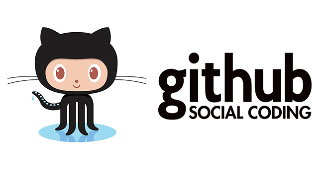

Eventos
Eventos programados para el año 2025

Uso de GitHub en proyectos colaborativos
Fecha: 15 de octubre de 2025 - 05:00 PM
Lugar: Aula C-205
Descripción: Taller práctico sobre el uso de GitHub para la gestión de proyectos colaborativos.

Introducción a Docker para entornos de desarrollo
Fecha: 24 de noviembre de 2025 - 12:00 PM
Lugar: Auditorio Central
Descripción: Taller práctico sobre el uso de Docker para la creación de entornos de desarrollo.
Configuración básica de servidores Linux
Fecha: 1 de Diciembre de 2025 - 06:00 PM
Lugar: Aula C-205
Descripción: Taller práctico sobre la configuración básica de servidores Linux.